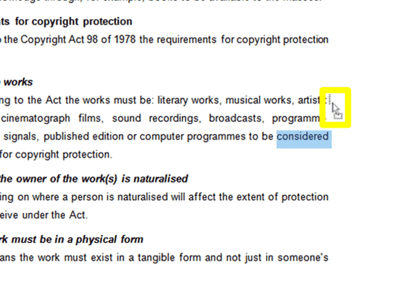

When proofreading your masterpiece document you are bound to find areas you wish to modify, improve or delete.
1. To edit a section of text, position your cursor in the text you wish to change.
2. Use the Backspace button on your keyboard to delete characters, whole words or sentences and retype them.
3. To delete whole blocks of text, use the selection skills you learnt in the Selecting Text tutorial above to select the text you wish to remove. Press delete on your keyboard.
4. You can also select a line of text and simple start typing to replace it.
5. To move words or sentences in your text, select the word or sentence. With the word/sentence selected, left-click and hold down your left mouse button whilst dragging the word or sentence to its new position. When dragging the actual word won't move until you release the left button, but your cursor will change into a left-upwards pointing arrow with a box below it (circled in the screenshot below):
